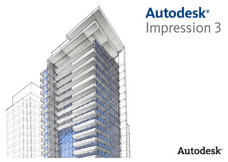
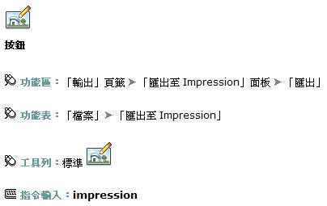
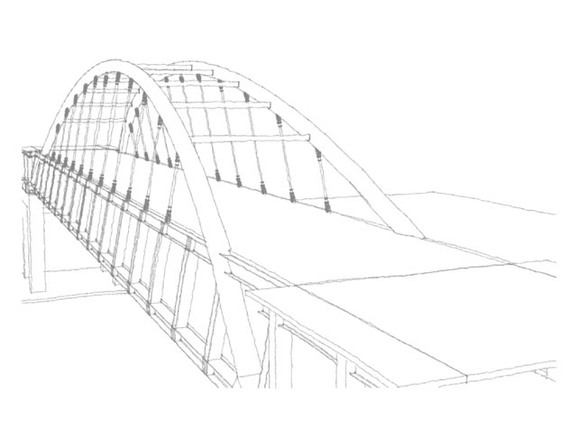
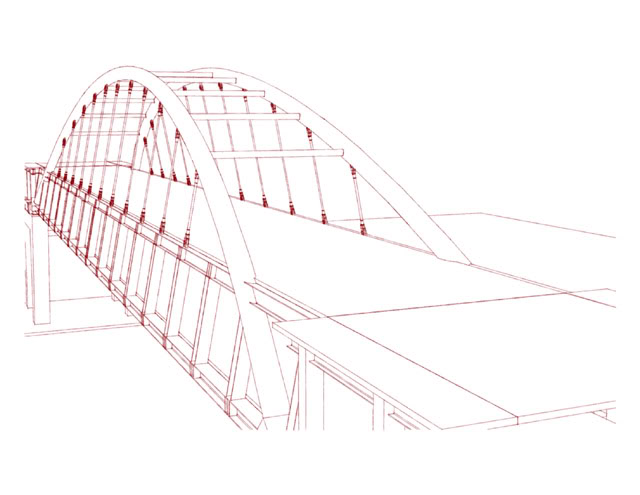
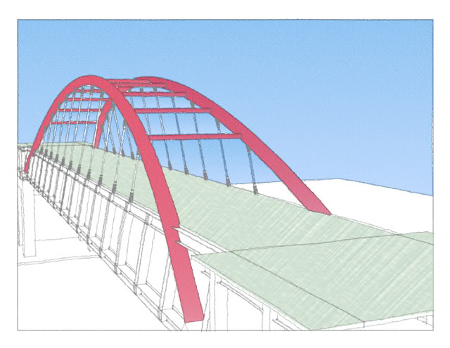
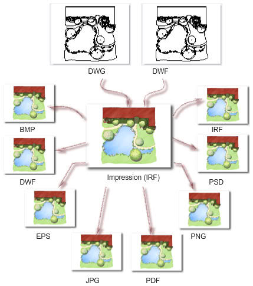

一般建築師事務所在比圖的時候，會把AutoCAD線稿匯出，然後在透過美工軟體來上色，以我自己的經驗及使用習慣，先將DWG匯出成EPS後再使用Photoshop。

而現在推薦各位另一套軟體 Autodesk Impression，如果您是 Subscription 客戶就可以免費下載使用，比較可惜的是沒用繁體介面，根據網路上其他使用者的經驗，有使用過SketchUp應該知道在3D建模方面快速又簡單，而Impression可以當作2D來使用，因為他已內建了許多模組(圖塊、顏色及圖片)。

從AutoCAD 2010版本開始新增 匯出至 Impression 的功能，即可快速使用既有的AutoCAD物件轉換為底稿供上色用。



我覺得最他最吸引人的地方是，匯出到 Impression，可以使您的圖面具有「手繪」描邊的外觀，這樣看起來比較柔和不會硬梆梆，在提案時除了使用彩現的圖片，在這裡即可搭配仿手繪手稿的感覺，而轉出的描邊類型隨時可以在改變，讓你的設計(手稿)更具有彈性及變化，使得您的設計案比較有質感及獨到之處呢!!
▲添加描邊效果，如粗糙的邊緣



▲可以轉出多種格式，以滿足工作需求

◆影片展示(建議使用高畫質HQ播放，畫面解析度較佳)：
http://download.autodesk.com/us/impression/2009overview/index.html